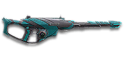

← Back to the Phantom VA23 comparison
Sage Guide · Vanu Sovereignty · Infiltrator
The Vanu close-range semi-auto. It costs 650 certs / 499 DBC — so this page first tells you what it does that the free starter rifle can't, then teaches you to win fights with it.
The one-line verdict: a semi-automatic sniper that trades the bolt-action's one-shot kill for forgiveness: two headshots or three chest shots, a follow-up in 0.26 s, and no bullet drop — the sniper rifle for players who would rather take the second shot than wait for the perfect first one.

The Phantom VA23 · Vanu Sovereignty · 10-round magazine · 650 certs / 499 DBC
Picture the scene, because you've probably lived it: you're sprinting across a courtyard, an enemy appears at mid-range, and you do everything at once — hold the trigger down while you're still running, then press aim-down-sights (ADS) a split-second later, finger still down. The sight picture snaps in, it looks precise… and your bullets spray everywhere except the man in your crosshair. He kills you. It feels like the game cheated. It didn't — here's what actually happened.
You started firing from a sprint, from the hip. Sprinting is the least accurate state in the game: your cone of fire starts at 7.0° — fully bloomed, the widest it can ever be. Every shot you fire from the hip widens it further still (+0.2° per aimed shot, more from the hip).
Then you pressed ADS mid-hold — and nothing reset. Aiming down sights does not shrink a cone of fire that is already bloomed. The scope only gives you a precise picture; the bullets keep flying out of the wide cone you built while running and hipfiring. That's the whole mystery: accurate-looking aim, wildly inaccurate gun. And on a semi-auto sniper the damage is unforgiving: you need two headshots or three chest shots, so every wasted round is a third of the kill.
Two timers stack the deck further: your gun needs about 0.3 s to settle after a sprint, and raising the sight itself takes ~0.2 s. Trigger held through all of it means your first half-second of fire is pure confetti.
1 · Feet. Let go of sprint (and the trigger, if you're already holding it). Stop, or drop into a strafe — anything but a full sprint.
2 · Sight. Press ADS and let the sight come up. This takes a heartbeat — that's fine, a moment behind cover costs nothing.
3 · Trigger — in taps. Now fire, one aimed shot at a time, starting from the aimed cone of 0°. Let the cone recover (~0.3 s) between shots — your first shots land where the dot points, and you control the bloom from zero instead of inheriting a maxed-out cone.
Stop → aim → tap. If you take one habit from this entire page, take this one. You'll practise exactly this rhythm in the simulator in section 04.
Four beats, left to right — the same mistake the cards above describe, drawn out.
1 · SprintingYour cone starts maxed at 7.0° — the widest it can ever be.
2 · Trigger heldFiring from the hip while running — every shot adds bloom.
3 · ADS, mid-holdThe sight looks precise — but aiming down sights does not reset bloom.
4 · The sprayBullets fly out of the wide cone you built. The enemy walks away.
Same fight, done right. Each beat has a job, and the order is the whole lesson.
1 · StopLet go of sprint (and the trigger). About 0.3 s for the gun to settle.
2 · AimPress ADS and let the sight come up (~0.3 s).
3 · FireNow fire — from the aimed cone. First shots land where the dot points.
The exception — under ~8 m, skip the whole danceHipfire works, no ADS needed, and stopping is optional. Keep moving, strafe, and let the hipfire ring do the work.
Every enemy infantry has 1,000 health (500 shield + 500 health). Your bullet does 400 damage up close, fading to 280 at long range — and with a 2.0× headshot multiplier, two headshots kill at every range. Chest shots are the backup: three up close, four at distance. Leg shots count less (×0.9) but never change the shot count on this rifle except where the table shows it. That gives you the numbers worth memorising:
| Range | Damage | Head | Chest | Legs | Chest vs Nanoweave |
|---|---|---|---|---|---|
| Close · 0–15 m | 400 | 2 | 3 | 3 | 4 |
| Far · 16–200 m | 399→280 | 2 | 3–4 | 3–4 | 4–5 |
Perfect-accuracy times to kill (refire 260 ms): two headshots 0.26 s, three chest shots 0.52 s, four chest shots 0.78 s. Body shots against a Nanoweave wearer lose 20% — headshots are unaffected, which is one more reason the head is the target.
Nanoweave: rank 1 of the Nanoweave Armor suit slot cuts sniper-rifle bodyshot damage by 20%; headshots are not reduced. A Nanoweave rebalance rumoured for 2026-11-08 could not be verified in public patch notes — the numbers here use the published 20% figure. Sniper rifles also use their own Sniper Rifles resistance type, which is what makes that bodyshot reduction apply to them.
Full power to 15 m, then a slide to 280 at 200 m — and it never goes lower. The gold dashed line shows the Suppressor: damage starts falling 20 m sooner and bullets fly 15% slower.
One gun, four fighting styles. The right technique changes with distance — use the range finder below to see what your bullets do at any range, then learn the four bands underneath it.
How to fight hereDrag the slider to a distance and the advice changes.
Best-case chest TTK is three chest shots at the refire rate. Two headshots are faster — and they never stop working, at any range.
Aim: centre of the chest, from the hip. Keep moving.
Inside 25 m you're in SMG and shotgun country. Your hipfire cone is 6° standing — about 0.84 m wide at 8 m — so hipfire works at arm's length, but the Phantom's real game starts past it. If they close in, hipfire or draw your sidearm.
Aim: neck / upper chest. Tap — one shot at a time.
Your full 400 damage lives here: two headshots in 0.26 s, or three chest shots in 0.52 s. No bullet drop, so aim straight at the head. Tap, let the cone recover (~0.3 s), tap again — never hold the trigger.
Aim: the head. Lead runners slightly — 525 m/s is fast, not instant.
Three chest shots still kill to 118 m, four beyond it — so past 118 m the head is the plan, not the bonus. Two headshots kill at any range in 0.26 s. Your 0.25° moving ADS cone is the tightest of any semi-auto sniper here.
Aim: the head. Two headshots, 0.26 s apart.
Four chest shots at minimum damage is a long time to stay exposed. The Phantom still kills with two headshots at any range, and with no drop the only question is your aim. Only take still or slow targets out here.
Your accuracy is decided by two things before skill even enters it: what your body is doing (your stance sets the starting cone of fire) and what your finger is doing (holding the trigger grows that cone with every shot). This rifle has no fire-mode switch — semi-auto only — so "firing modes" are something you do with your finger, not a setting on the gun: tap, pause, tap.
| Stance | Starting cone | What it means for you |
|---|---|---|
| Sprinting | 7.0° | Maxed out — the widest the cone can be. This is the first-lesson disaster: never start firing from a sprint. |
| Hipfire, moving | 6.50° | Walking or strafing from the hip. The ring at 8 m is about 0.91 m wide — see section 05. |
| Hipfire, standing | 6.00° | Your point-blank default. The 0.84 m ring at 8 m in section 05 is this stance drawn out. |
| Hipfire, crouched | 5.50° | The tightest hipfire you have. Crouch when holding a doorway from the hip. |
| Aimed (ADS), feet planted | 0° | Standing or crouched makes no difference here — a pinpoint first shot. This is why the first lesson's order matters. |
| Aimed (ADS), strafing | 0.25° | Still tight, but you move at half speed (0.5×) and the cone is no longer zero. Strafe between shots to stay hard to hit; plant your feet during each shot. |
| Discipline | How it works | Use it at |
|---|---|---|
| The tap | One click, one shot, from a 0° cone | Your whole discipline is a single aimed shot. Plant your feet, put the crosshair on the head, tap once. There is no burst to save you — every shot is aimed or it is wasted. |
| The double-tap | Two headshots in 0.26 s | Two headshots kill at any range, and the second comes 260 ms after the first. If the first was a headshot, the second is a formality — keep the crosshair on the head and tap again. |
| The pause | Let the cone recover (~0.3 s) between shots | Your recoil recovers before your refire ends, but your cone of fire does not start recovering until the refire is over. Firing the instant the gun is ready means firing before the cone has recovered — wait a heartbeat longer than the gun asks for. |
| Sustained fire | Never hold the trigger | Holding the trigger adds 0.2° of bloom per aimed shot with no recovery between them. Three fast chest shots kill up close; the same three shots fired as a panicked hold mostly miss. Tap, pause, tap. |
A note on grips: the Comfort Grip trims sideways recoil, but on a semi-auto sniper the kick is mostly vertical and the bloom is the real enemy — the grip helps a little, the pause between shots helps a lot.
A target 30 m away, aiming down sights. Press and hold FIRE (mouse, touch, or hold Space with the button focused) and watch the holes walk wider the longer you hold — that's firing from an ever-growing cone. Release, let the cone reset, fire again. Aim for one or two shots per pull; three is tolerable while you're new. This practice window is shared by the whole Sage series: it's driven by a weapon profile plugged into the window — here the Phantom VA23's (260 ms refire, 0° starting cone, 0.2° bloom per shot, target at 30 m) — and the spread is drawn at true scale from those numbers.
Cone of fire — fills as you hold, empties when you release.
Your taps will be graded here — green at 1–2 shots, tolerable at 3.
Some things are easier to show than to say. Here's what your bullets actually do: how wide hipfire spreads at 8 metres, what the right shot rhythm looks like, and what the scopes really change. The hands-on version — taking the shot yourself — is the practice window in section 04.
A full-size target 8 m away — an arm's-length room fight. The rings show where hipfire rounds land around your aim point (the chest). Sizes are drawn to scale from the gun's real cone-of-fire numbers.
Read it this way: standing still, the 0.84 m ring is already wider than the chest — hipfire on a sniper rifle is a last resort, not a plan. Move and it grows to 0.91 m — wider than the whole torso at 8 m — and the rings only grow with distance while the man doesn't. The moving ring is half a metre wide by about 4 m: past that, most hipfire rounds leak past him, and the answer is to aim down sights, where the spread shrinks to a dot. Sniper rifles take no Laser Sight, so there is no attachment that tightens these rings. (Ring sizes use the real geometry: spread diameter = 2 × distance × tan(cone ÷ 2).)
Every shot widens your cone of fire ("bloom"). Releasing the trigger for a heartbeat resets it. Same 6 rounds, two very different outcomes:
The target pattern is taps of 1–2 rounds — that's the ideal. Three in one pull is fine while you're new (call it newbie tolerance). Past that, the bloom (0.2° per shot aimed) keeps growing with every shot, so the extra bullets mostly decorate the wall behind your enemy instead of hitting him. Short taps also leave you rounds for the second enemy — and with 10 in the magazine, three kills per mag is a realistic goal, not a dream.
No zoom. The target at 35 m is small but the view is wide open — you see the crate, the tower, and the next enemy coming. Fast to aim, nothing blocks your edges. Best inside ~40 m.
Same target, same 35 m — but his head fills the scope, so placing shots on it gets much easier. The price: your view narrows to the round window, the crate and tower are gone, and close targets feel fast and huge. Best at 50–150 m — which is exactly where this rifle lives.
That's the whole 30-cert decision from section 06 in one picture: 1x for awareness, 4x for precision. Most veterans carry both and swap per base — indoors 1x, open ground 4x.
Unlike a starter rifle, the Phantom VA23 comes with a scope but little else: no grip, no barrel attachment — everything below is a purchase. That also means every cert you spend is a real choice. Buy in the order shown and stop whenever the gun feels right.
A clean dot-and-circle sight with no zoom. Your default once you spend anything — and on a close-range sniper, often the only sight you need.
Good: everywhere indoors and out to ~40 m — which is most PlanetSide fights.
Bad: picking out targets past 100 m; that's what the 4x is for.
Doubles your view magnification. Costs almost nothing — the price of a couple of kills.
Good: open-field bases and your 25–100 m game. Swap between 1x and 2x per fight.
Bad: tight indoor rooms — the zoom makes close targets feel fast and huge.
Vanu marksman scopes with 3.4x magnification — the VMS uses a minimalist chevron, the V3 Holo a red dot in a triangular housing.
Good: holding lanes at 50–150 m, where the extra magnification finally pays for itself.
Bad: any fight inside 30 m, which is where you'll still spend much of your time.
The longest sights this rifle takes — 4x magnification with a sniper-style crosshair.
Good: your longest shots, 100 m+, where the head is otherwise a speck. The 4x is the Ghost's and Phantom's ceiling for a reason.
Bad: any fight inside 50 m. The 1x and 2x cover everything closer.
You vanish from the minimap when firing and your shots are quiet. In exchange, damage starts dropping off 20 m sooner and bullets fly 15% slower (525 → 446 m/s) — harder to lead moving targets, and about 20 m less one-shot headshot range.
Good: flanking behind enemy lines, rooftop and tree work, solo play behind the front — anywhere the minimap is the enemy.
Bad: front-line fighting where everyone already knows where you are — you pay the damage cost for stealth you don't need.
The honest default. A sniper rifle's barrel slot is a trade-off, not an upgrade — and on a bolt-action, the Suppressor's damage cost is the whole argument.
Good: your first weeks, and most fights after them. Spend certs on your scope and rail first.
Bad: nothing — there's no downside to an empty slot.
A heavier receiver that steadies the gun's kick. The benefit on a sniper rifle is modest — the kick was never the problem, the bloom and the sway are — but it is the only rail option that touches recoil at all.
Good: semi-auto fire, where the second shot's placement matters and every little bit of steadiness helps.
Bad: as a first purchase — the scope and the discipline matter far more than the receiver.
Trims side-to-side recoil by 25%. On a sniper rifle the kick is mostly vertical, so the benefit is small — but it is real, and it costs nothing else.
Good: aimed, mid-to-long-range play, where every bit of steadiness helps the second shot land.
Bad: as a first purchase — the scope matters far more than the grip.
A torch whose beam reveals cloaked infiltrators. Toggle it with the attachment key (X by default).
Good: hunting a stalker infiltrator camping your capture point — sweep corners with it.
Bad: as your everyday rail — it gives zero accuracy help, and the beam advertises your position.
There is no Extended Magazine for this gun — the rail slot is grip, coil, receiver or torch, that's the menu. There is no underbarrel slot either.
No Soft Point, no High Velocity, no special rounds: sniper rifles take no ammunition attachments at all. Your damage falloff is fixed — the range game is played with positioning and scope choice, not with ammo.
0 certs · Day one
What the purchase hands you. Honestly playable — two headshots kill at any range — but the first certs below transform it.
60–130 certs · Recommended
The best value in this whole guide. A steadier gun, the right sight for the distance, and nothing wasted.
160 certs · Lane holder
Built to sit on a lane and tap away: two headshots in 0.26 s, no sway to fight, and a 10-round magazine that forgives a miss.
130 certs · Flanker
No minimap blip, quiet shots, and the same two-headshot kill. Weak in a fair fight — so don't take fair fights.
Headshots deal double damage: two kill at every range, where the chest needs three or four. Don't aim at the head directly — aim at the neck and let the second tap walk into the skull. It's the single biggest damage upgrade you own, and it's free.
Every shot widens your cone of fire. Your recoil recovers before your refire ends, but your cone does not start recovering until the refire is over — so wait a heartbeat longer than the gun asks for. One or two shots per pull is the ideal; three is tolerable while you're new.
Your 1x–4x sights have no sway at all, and they scope in faster (0.2 s instead of 0.3 s). That is the close-range sniper's edge: a sight picture that never drifts, and a scope that comes up before the enemy finishes turning.
Reloading with even 1 bullet left takes 2.13 s; an empty gun takes 2.98 s. Count roughly: after a kill or ~7 rounds, duck behind cover and reload early. Treat the last 3 rounds as your emergency reserve, not your working magazine.
Your damage, accuracy and velocity all shine at 25–75 m — and your two-headshot kill never stops working, at any range. Sprint between cover, use buildings and rocks as stepping stones, and arrive at your range before opening fire. The player who chooses the range usually wins the duel — make it you.
A bodyshot plus two sidearm rounds is faster than a third rifle shot, and a bodyshot plus a melee swing kills standard infantry outright. If they close inside 8 m, stop scoping: unscope, hipfire, or draw the pistol. The rifle is for distance; the pistol is for everything closer.
Every gun has a price. Here's where the Phantom VA23 pays — and the habit that covers each hole.
A bolt-action ends the fight with one headshot. You need two — and if the first is a chest shot, the kill takes three or four rounds, during which a bolt-action has already fired and rechambered.
Play around it: don't duel bolt-actions at their range. Your edge is the follow-up: two headshots in 0.26 s, and a miss costs you 0.26 s, not 1.4 s.
Ten rounds is a small magazine, and at 3–4 shots a kill, two enemies plus a few misses empties it. Caught reloading in the open, you are defenceless for 2.13 s (2.98 s on empty).
Play around it: reload early behind cover (habit 4) and make each tap count — two aimed headshots beat six hopeful chest shots. There is no Extended Magazine for this gun, so the habit is the upgrade.
Every aimed shot adds 0.2° of bloom, and the cone doesn't start recovering until the refire is over. Hold the trigger and the third shot is already decorating the wall.
Play around it: tap, pause, tap. One or two shots per pull, a heartbeat between them — the pause is the whole discipline.
Nanoweave rank 1 cuts sniper bodyshot damage by 20% — your three-chest-shot window shrinks to never m, and past that every body-shot kill takes an extra round. Headshots are unaffected.
Play around it: hunt the head. Against a Nanoweave wearer the body is a four- or five-shot job; the head is still two taps.
Like all rifles, you move at half speed while aiming down sights (0.5×). And every unsuppressed shot reveals you on the minimap out to 100 m.
Play around it: hipfire inside ~5 m instead of scoping, reposition after every kill, and never sit in one spot for a whole fight.
Open the world map, travel to VR Training, and run these on the target dummies. Five minutes before a play session beats an hour of dying confused.
At 50–100 m — this rifle's home — kill dummies with taps of 2, releasing the trigger fully between taps. If a tap goes wide, slow down. Goal: whole kills without a single wild round, at the range where most rifles start missing.
Walk the dummy range keeping your crosshair glued to neck height, snapping to each new target. Two headshots per dummy, 0.26 s apart. Slow and clean first; speed comes on its own.
Walk the dummy range keeping your crosshair glued to neck height the whole time, snapping to each new target without dipping to the floor or sky. Slow and clean first; speed comes on its own.
Fire two taps at a dummy, cloak, sprint 20 m to new cover, fire again. This is your survival skill — the one that keeps you alive after the minimap gives you away. Remember: an unsuppressed shot reveals you out to 100 m.
Fire exactly 7 rounds, step behind a pillar, reload, repeat. Train your hands to reload early and only in cover until it's automatic — with a 2.13-second reload (2.98 s on empty), in real fights you'll do it without thinking, which is the point.